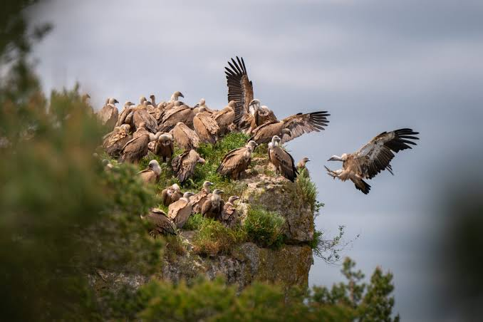

Vautours
des CévennesLe grand retour des rapaces nécrophages


⟹ Sites Emblématiques ⟸
Des hôtes anciens des falaises. Pendant des siècles, les vautours ont plané au-dessus des causses et des Cévennes, profitant des carcasses laissées par l’élevage ovin. Ils jouaient le rôle d’équarrisseurs naturels, indispensables à l’équilibre sanitaire des troupeaux.
Une disparition au XXe siècle. Tirs, empoisonnements destinés aux « nuisibles », collectes et raréfaction des carcasses liée à l’évolution de l’élevage conduisent à l’extinction locale du vautour fauve. Dans les années 1940, il a disparu des Grands Causses.

Une réintroduction pionnière. Au début des années 1970, des naturalistes passionnés, avec le soutien du Fonds d’intervention pour les rapaces (devenu la LPO Grands Causses) et du Parc national des Cévennes, entreprennent de faire revenir l’espèce. De 1981 à 1986, plusieurs dizaines de vautours fauves sont relâchés dans les gorges de la Jonte : c’est l’une des premières réintroductions de rapaces réussies en Europe.
Le vautour moine puis le gypaète. Fort de ce succès, le programme s’étend au vautour moine, réintroduit à partir de 1992, puis au gypaète barbu, dont les premiers lâchers dans les Grands Causses ont lieu en 2012. Le vautour percnoptère, migrateur, est revenu de lui-même nicher dans la région.
Une alliance avec les éleveurs. La réussite repose sur un partenariat avec les éleveurs : des placettes d’équarrissage naturel permettent de déposer les animaux morts, que les vautours éliminent rapidement. Les quatre espèces de vautours d’Europe fréquentent aujourd’hui le ciel des Cévennes et des causses, jusqu’au mont Aigoual et au cirque de Navacelles côté gardois.
Falaises calcaires pour nicher, courants ascendants pour planer et élevage extensif pour se nourrir : les Grands Causses et les Cévennes offrent aux vautours les trois conditions de leur survie. Leur envergure, proche de 2,70 m pour le vautour fauve, leur permet de parcourir des dizaines de kilomètres sans battre des ailes.
Partie de quelques dizaines d’oiseaux relâchés, la population de vautours fauves des Grands Causses compte aujourd’hui plusieurs centaines de couples, l’une des plus belles réussites de conservation en Europe.
— Programmes de réintroduction des Grands CaussesLes vautours se partagent la tâche : le vautour fauve consomme les chairs, le vautour moine les parties coriaces, le percnoptère les petits restes et le gypaète barbu les os, qu’il brise en les lâchant sur les rochers.
Meyrueis village au confluent de la Jonte et de la Brèze, point de départ vers les gorges et l’Aigoual.
Aven Armand célèbre grotte du causse Méjean, avec sa forêt de stalagmites.
Chaos de Nîmes-le-Vieux étonnant labyrinthe de rochers ruiniformes au cœur du causse Méjean.
Observatoire du mont Aigoual dernière station météo de montagne en France métropolitaine, avec panorama des Alpes aux Pyrénées par temps clair.